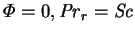
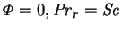
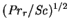
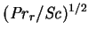
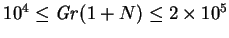
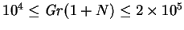

The transport of vapour between a surface and an unbounded gaseous phase has been studied by many investigators. Much of the theoretical work has focused on semi-infinite vertical plates and used similarity or Pohlhausen integral techniques (Somers 1956; Mathers, Madden & Piret 1957; Wilcox 1961; Acrivos 1962; Gill, W. N., del Casal & Zeh 1965, Adams & Lowell 1968; Saville & Churchill 1970; Taunton, Lightfoot and Stewart 1970; Gebhart & Pera 1971; Bottemanne 1972a; Schenk, Altmann & DeWit 1976; Nilson & Baer 1982; Boyadjiev & Halatchev 1998; Halatchev & Boyadjiev 1998). Numerical solutions of the `boundary layer' equations were obtained by Callahan and Marner (1976), for the evolution problem for a semi-infinite plate subjected to a step change in temperature and vapour mass fraction, and Mahajan and Angirasa (1993), for combinations of the parameter values that did not allow similarity solutions. Bejan (1985; §3.3.5) used scale analysis to obtain the functional forms of the Sherwood and Nusselt numbers for various limiting cases. Perhaps the earliest theoretical work is that of Schmidt (1929), who derived approximate results from those for the analogous single fluid heat transfer problem. Experiments have been performed by Schmidt (1929), Adams & McFadden (1966), Bottemanne (1972b) and Mathers et al. (1957).
In the problems considered in the present project, the domains of influence of the various surfaces of the enclosures overlap, so that the results of these studies of free convection are not directly applicable. Many of the difficulties of formulating the governing equations, however, are common.
Few of the above
investigations included finite mass transfer rate effects (
 ).
Somers (1956) and Adams and Lowell (1968)
did include transpiration, but not interdiffusion, which is not
a generally appropriate approximation
(§§2.3.2, 4.4, 6.3).
W. N. Gill et al. (1966) included both transpiration and interdiffusion,
but only allowed variation of the mixture specific heat capacity in some
problems. This is inconsistent (see p.
).
Somers (1956) and Adams and Lowell (1968)
did include transpiration, but not interdiffusion, which is not
a generally appropriate approximation
(§§2.3.2, 4.4, 6.3).
W. N. Gill et al. (1966) included both transpiration and interdiffusion,
but only allowed variation of the mixture specific heat capacity in some
problems. This is inconsistent (see p.  ).
).
Another common problem of free convection and convection in enclosures is
how to combine the buoyancy forces in correlating the results.
Schmidt (1929) assumed that
they were simply additive, i.e. he used a combined Grashof number similar
to
 , and demonstrated the appropriateness of this for the special
case
.
Somers (1956) predicted a more complicated
relation in which the buoyancy ratio,
, and demonstrated the appropriateness of this for the special
case
.
Somers (1956) predicted a more complicated
relation in which the buoyancy ratio,  , should be multiplied by
.
Neither of these two approaches is generally correct.
Their relative merits were much debated in the cited literature (see
especially Gebhart & Pera 1971). Schmidt's idea is
implicit in the velocity scale employed in (2.27), but it is not
relied upon to remove
, should be multiplied by
.
Neither of these two approaches is generally correct.
Their relative merits were much debated in the cited literature (see
especially Gebhart & Pera 1971). Schmidt's idea is
implicit in the velocity scale employed in (2.27), but it is not
relied upon to remove  as an independent parameter. I did find, however,
that
as an independent parameter. I did find, however,
that  could be neglected for plane vertical square cavities for
 and properties appropriate for air-water
vapour mixtures (McBain 1995, 1997b; §3.3.16).
Difficulties do occur, however, for other Schmidt and Prandtl numbers
(§3.3.15).
could be neglected for plane vertical square cavities for
 and properties appropriate for air-water
vapour mixtures (McBain 1995, 1997b; §3.3.16).
Difficulties do occur, however, for other Schmidt and Prandtl numbers
(§3.3.15).
Free convection vapour transport has been reviewed in more detail by Ostrach (1980) and Gebhart et al. (1988, ch. 6).